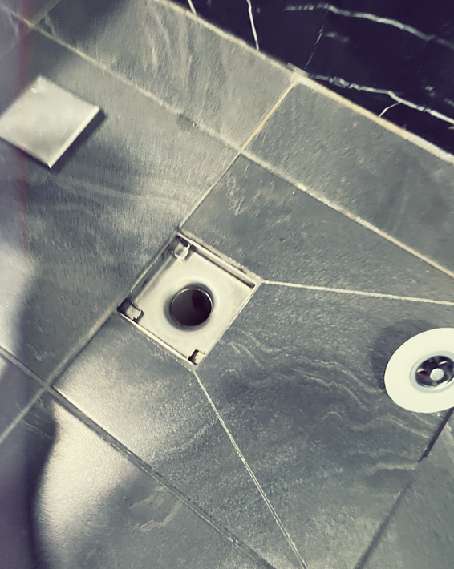
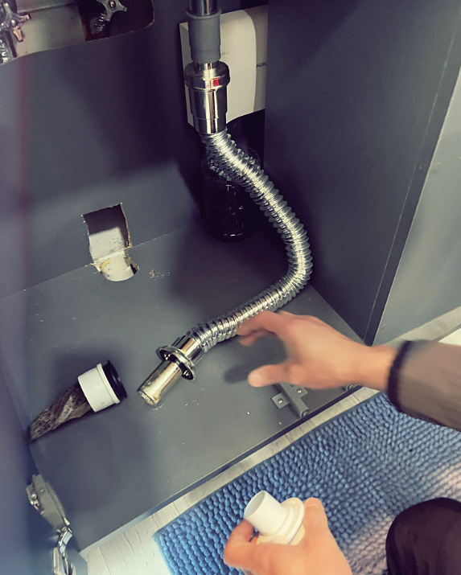
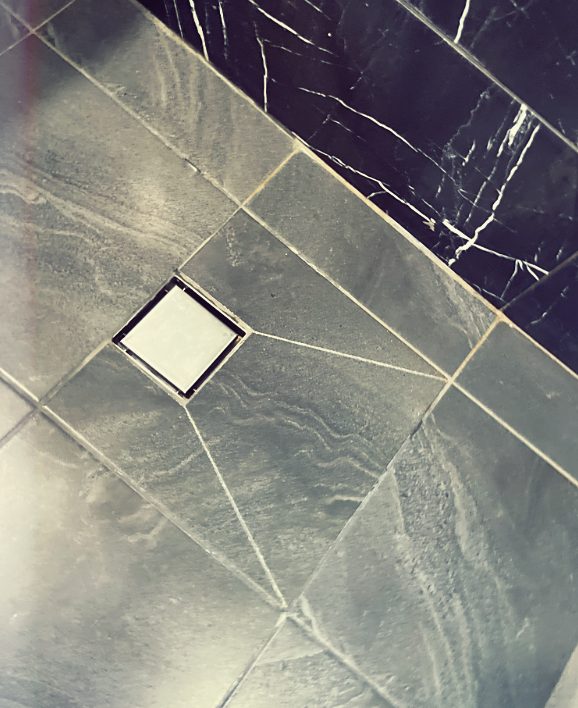

1. 창원싱크대막힘이 발생하는 주요 원인
✓ 음식물 찌꺼기 누적
✓ 기름때 고착
✓ 세제 찌꺼기 축적
✓ 배관 내부 슬러지 발생
✓ 오래된 주방 배관의 배수 흐름 저하
창원싱크대막힘은 주방에서 가장 흔하게 발생하는 배관 문제 중 하나입니다. 싱크대는 매일 설거지와 조리 과정에서 사용되기 때문에 음식물 찌꺼기, 기름때, 세제 찌꺼기 등이 배관 내부로 계속 유입됩니다. 처음에는 물이 조금 늦게 내려가는 정도로 보이지만 시간이 지나면 배관 안쪽에 기름 성분이 달라붙고, 그 위로 음식물 찌꺼기가 쌓이면서 물길이 점점 좁아집니다.
창원싱크대막힘은 단순히 배수구 입구만 청소해서 해결되지 않는 경우가 많습니다. 싱크대 하부장 안쪽 배관, 바닥 배관, 공용 배관으로 이어지는 구간까지 막힘이 진행될 수 있기 때문입니다. 특히 기름때가 굳어 배관 벽면에 붙어 있는 경우에는 일반적인 세정제나 뜨거운 물만으로 해결하기 어렵습니다.
2. 창원싱크대막힘 대표 증상
✓ 싱크대 물이 천천히 내려감
✓ 싱크볼 안에 물이 고임
✓ 배수구에서 꾸르륵 소리 발생
✓ 하부장 안쪽에서 냄새 발생
✓ 심한 경우 역류와 누수 발생
창원싱크대막힘이 시작되면 가장 먼저 배수 속도가 느려집니다. 평소보다 물이 천천히 내려가거나 설거지 중 싱크볼에 물이 고인다면 배관 내부에 이물질이 쌓이고 있다는 신호일 수 있습니다. 이 상태를 방치하면 배수구에서 소리가 나거나 악취가 올라오고, 심한 경우 하부장 배관 연결부 주변으로 물이 새는 증상이 나타날 수 있습니다.
특히 창원 지역의 아파트, 빌라, 상가 주방에서는 사용량이 많아 막힘이 빠르게 진행되는 경우도 있습니다. 주방 배관은 기름때가 많이 쌓이는 구조이기 때문에 초기에 점검하지 않으면 반복 막힘으로 이어질 수 있습니다.
3. 창원싱크대막힘 현장 점검 과정
✓ 배수 속도 확인
✓ 역류 여부 확인
✓ 하부장 누수 흔적 확인
✓ 악취 발생 위치 확인
✓ 배관 구조와 막힘 의심 구간 확인
수리남케어는 창원싱크대막힘 현장에 방문하면 먼저 싱크대 사용 상태와 증상을 확인합니다. 물이 어느 정도 속도로 내려가는지, 배수구에서 냄새가 올라오는지, 하부장 내부에 누수 흔적이 있는지, 역류가 발생하는지 등을 꼼꼼하게 살펴봅니다. 이후 배관 구조를 확인하고 막힘이 예상되는 구간을 판단합니다.
창원싱크대막힘은 같은 증상이라도 원인이 다를 수 있습니다. 배수구 입구에 이물질이 걸린 경우, 하부 배관에 기름때가 쌓인 경우, 바닥 배관 깊은 곳에서 막힌 경우에 따라 작업 방식이 달라집니다. 수리남케어는 현장 상황에 맞춰 석션, 스프링 장비, 배관내시경, 고압세척 등 필요한 장비를 선택하여 작업합니다.
4. 창원싱크대막힘 작업사진
✓ 실제 싱크대 막힘 작업 현장
✓ 배관 점검 과정
✓ 막힘 제거 작업
✓ 작업 후 배수 확인



5. 창원싱크대막힘 해결 작업 방식
✓ 현장 증상 확인
✓ 배관 구조 점검
✓ 전문 장비 사용
✓ 작업 후 배수 테스트
1. 증상 확인
싱크대 배수 속도, 역류 여부, 악취 발생 위치를 먼저 확인합니다.
2. 배관 점검
하부장 배관 연결부와 바닥 배관 흐름을 확인합니다.
3. 장비 작업
현장에 맞춰 스프링, 석션, 배관내시경, 고압세척 장비를 사용합니다.
4. 배수 테스트
작업 후 물을 충분히 흘려 배수 상태와 재역류 여부를 확인합니다.
6. 기름때와 음식물 찌꺼기 제거가 중요한 이유
✓ 기름은 배관 벽면에 굳어붙음
✓ 음식물 찌꺼기는 슬러지를 만듦
✓ 반복 막힘 원인을 제거해야 함
✓ 배관 내부 청소가 중요함
창원싱크대막힘의 가장 큰 원인은 기름때입니다. 조리 후 남은 기름이 배수구로 흘러가면 처음에는 액체 상태로 내려가지만, 배관 내부에서 식으면서 굳어 벽면에 달라붙습니다. 그 위에 밥알, 채소 조각, 커피 찌꺼기, 세제 찌꺼기 등이 쌓이면 배관 내부 공간이 점점 좁아집니다.
이러한 상태가 지속되면 물이 내려가는 통로가 좁아지고, 어느 순간 배수가 거의 되지 않는 상황이 발생합니다. 뜨거운 물을 붓거나 배수구 세정제를 사용하는 방법은 일시적으로 도움이 될 수 있지만, 이미 깊은 곳에 쌓인 슬러지를 완전히 제거하기는 어렵습니다. 반복되는 창원싱크대막힘은 내부 배관 상태를 확인하고 적절한 장비로 해결하는 것이 좋습니다.
7. 창원싱크대막힘 배관내시경 및 고압세척
✓ 배관 내부 직접 확인
✓ 막힘 위치 파악 가능
✓ 기름때와 슬러지 상태 확인
✓ 반복 막힘 예방에 도움
배관내시경은 눈으로 확인하기 어려운 배관 내부를 직접 확인할 수 있는 장비입니다. 창원싱크대막힘이 반복되거나 원인이 명확하지 않은 경우 배관내시경으로 내부 상태를 확인하면 문제 구간을 보다 정확하게 파악할 수 있습니다. 기름때가 어느 구간에 쌓였는지, 이물질이 걸려 있는지, 배관 손상은 없는지 확인하는 데 도움이 됩니다.
고압세척은 배관 내부에 쌓인 오염물과 슬러지를 강한 수압으로 제거하는 방식입니다. 배관 상태와 현장 구조에 따라 적용 여부가 달라질 수 있지만, 기름때가 많이 쌓인 현장에서는 효과적인 방법이 될 수 있습니다. 수리남케어는 창원싱크대막힘 현장에서 무리한 작업보다 배관 상태에 맞는 안전한 방법을 우선으로 안내합니다.
8. 창원싱크대막힘 예방 관리 방법
✓ 음식물 거름망 사용
✓ 기름기 많은 음식물 바로 배출 금지
✓ 커피 찌꺼기 배수구 배출 주의
✓ 배수 속도 저하 시 조기 점검
창원싱크대막힘을 예방하려면 평소 사용 습관이 중요합니다. 기름기가 많은 음식물은 키친타월로 닦은 뒤 설거지하는 것이 좋고, 음식물 찌꺼기는 배수구망에서 최대한 걸러내는 것이 좋습니다. 커피 찌꺼기나 밀가루 반죽처럼 물과 만나 뭉치는 성분은 배관에 흘려보내지 않는 것이 좋습니다.
또한 배수 속도가 평소보다 느려졌거나 배수구에서 소리가 나기 시작한다면 초기에 점검을 받는 것이 좋습니다. 막힘이 심해진 뒤에는 작업 시간이 길어질 수 있고, 역류와 악취 같은 불편이 커질 수 있습니다. 창원싱크대막힘은 증상이 작을 때 확인하는 것이 가장 효율적입니다.
9. 창원싱크대막힘 24시간 상담 안내
✓ 24시간 상담 가능
✓ 전국 출동 가능
✓ 창원싱크대막힘 신속 대응
✓ 하수구막힘, 변기막힘 함께 상담 가능
싱크대 물이 잘 내려가지 않거나 악취, 역류, 하부장 누수 증상이 있다면 수리남케어로 문의해 주세요. 창원싱크대막힘 현장을 꼼꼼하게 확인하고 현장 상황에 맞는 작업 방법을 안내해 드립니다. 단순히 막힘만 제거하는 것이 아니라 원인 확인과 재발 예방까지 고려하여 작업합니다.
수리남케어는 창원싱크대막힘, 하수구막힘, 변기막힘, 배관내시경, 고압세척 작업을 진행하고 있으며 24시간 상담이 가능합니다. 배관 문제로 불편을 겪고 계시다면 언제든지 연락 주세요.
전화상담: 010-7601-1156
카카오톡: hhssoohso
관련 페이지
창원싱크대막힘과 함께 많이 찾는 배관 문제 안내 페이지입니다.